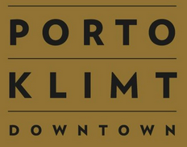
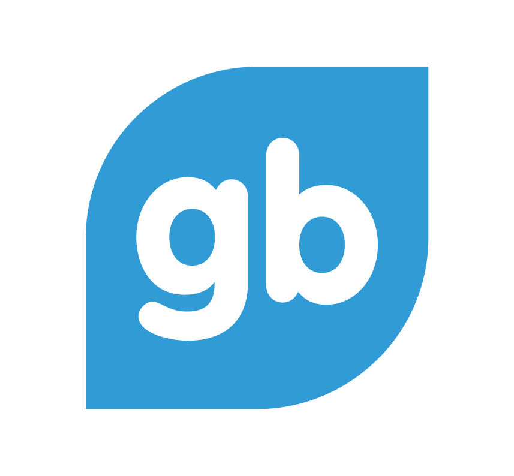
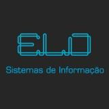
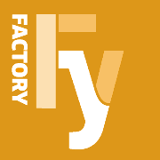
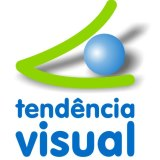
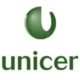
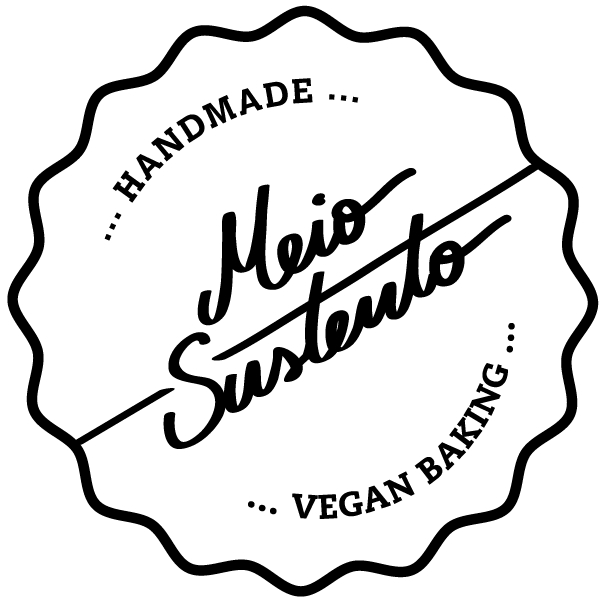
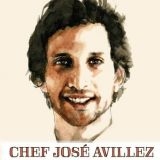
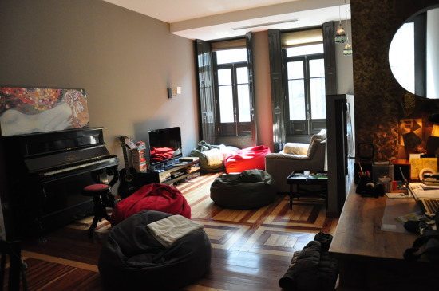

Benvindas ao Rails Girls Porto! Junta-te a nós neste evento gratuito onde vais criar uma app em Ruby on Rails!
Welcome to Rails Girls Porto! Let's build a Ruby on Rails app! Join us in this wonderful and free event!
Apply now! Applications are open until the 28th of February.
You learn designing, prototyping and coding with the help from our coaches.
You need your own laptop, curiosity and a sprinkle of imagination!
Want to help? We are looking for volunteers and Rails coaches. Email us.
| 18.00 - |
Installation partyGet to know the attendees a little bit before hand. Bring your laptop if you can, so we can install Ruby on Rails for you.Where: Porto Klimt Downtown, Rua Latina Coelho 300, Porto |
|---|---|
| 21.00 - |
Coach dinnerAll of the coaches are welcome to our coach dinner, where we'll go through the program for the next day. |
| 9:00 - 10:00 |
Registration, coffee and installation festDuring the morning we’ll install Ruby on Rails on your computer. |
|---|---|
| 10:00 - 10:15 |
WelcomeOutline of the day & word from sponsors |
| 10:20 - 10:45 |
Designing your web app -workshop |
| 10:50 - 11:10 |
Tryruby.orgLet's get coding! |
| 11:10 - 13:00 |
WORKSHOPJumpstart your first web application |
| 13:00 - 13:30 | Lunch |
| 13.30- 13:45 |
Bentobox - Understanding Web AppsRecap of what we’ve learned and how it all fits together. |
| 13:45 - 14:30 |
Lightning talks from coaches |
| 14:30 - 16:30 |
WORKSHOPExtend your application. |
| 20:00 - |
AfterpartyOpen for everyone, meet cool people interested in tech. |
Applications close: February 28th (Second Round)
Acceptances informed: February 28th
Applications until the February 23rd are valid to the second round.
Rails Girls Porto is co-organized with our awesome partners.
Want to help? We're looking for partners & sponsors for the non-profit event! Email us!
 Porto Klimt Downtown is a Guest House and Charming Hostel. This Hostel is a completely restored house from 1932 located in the centre of Porto. Their main goal is comfort, sustainability, and trying to make it cozy and warm. And that it is why their motto is: 'Enter as strangers, Leave as friends'.

Group Buddies groupbuddies.com is a Web development company from northern Portugal, that aims to create innovative products for the Web and Mobile. We love creating beautiful and functional Web sites. We also do a pretty good job in establishing your company's visual identity. We're quite the friendly bunch, so let's have a chat!
Bind bind.pt is an independent software development company, working in the market of CMS themes since 2005, and focusing on platforms like Sharepoint or DotNetNuke.

ELO-SI elo-si.com is a systems engineering company specializing in automatic data collection with action on the global market.
Conga Casa das Bifanas conga is a restaurant in Porto that specializes in Bifanas, a typical portuguese dish. Bifana is a seasoned meat in bread. The secret of Conga sauce is still to be discovered, since it was first created 37 years ago.

Fy Factory factoryworkstyle.com is a Cowork and Business Center in Braga. You can work on an open space or in a small office, have meetings or organize workshops in one of the several rooms available. The important thing is that you feeel good where you are working.
UPTEC uptec.up.pt is the structure of Porto University dedicated to Startups and Innovation Centers suporting the share of knowledge and tecnology.

Tendência Visual tendenciavisual is a print shop located in Aveiro district. Business cards, posters, flyers, notebooks, t-shirts, uniforms and many other quality products.

Unicer unicer.pt is the biggest beverage company in Portugal. The main products are beer and water, even though juices and wines have also an important part of the market. Unicer mission is to be the first choice of the consumer, by focusing on quality and innovation.

Meio Sustento Meio Sustento was a project started by Filipa and Joana with the purpose of making vegan cookies mainstream, by adding beautiful design and photography to traditional cooking and vegan ingredients. Handmade vegan cookies.
 Empadaria do Chef empadariadochef.com is a restaurant with excelent empadas from the Chef, soups from the Chef and pastries from the Chef José Avilez.
How much does the workshop cost? Nothing, it's free! You just need to be excited!
Who is this aimed for? Women of any age with basic knowledge of working with a computer. We’ve had people of all ages taking part. The event will be in Portuguese, but English translators will be available. Please bring your laptop.
Can men attend? Yes, but girls are given a priority.
I know how to program - How can I help? We’re also looking for people to be coaches. We’ll have a two-three hour workshop before the event to walk you through the curriculum. Email us
Rails Girls Porto is going to be at the Hostel and Guesthouse
Porto Klimt Downtown
Rua Latina Coelho 300
Porto.
Besides the event, if you need a place to stay this is a wonderful hostel. Check the the website for reservations and pictures.
Here is the link to that location on Google Maps.
Should you get lost or stuck, dial 00351 910 444 710. This should connect you to an organizer or coach that will try to help you get there.
